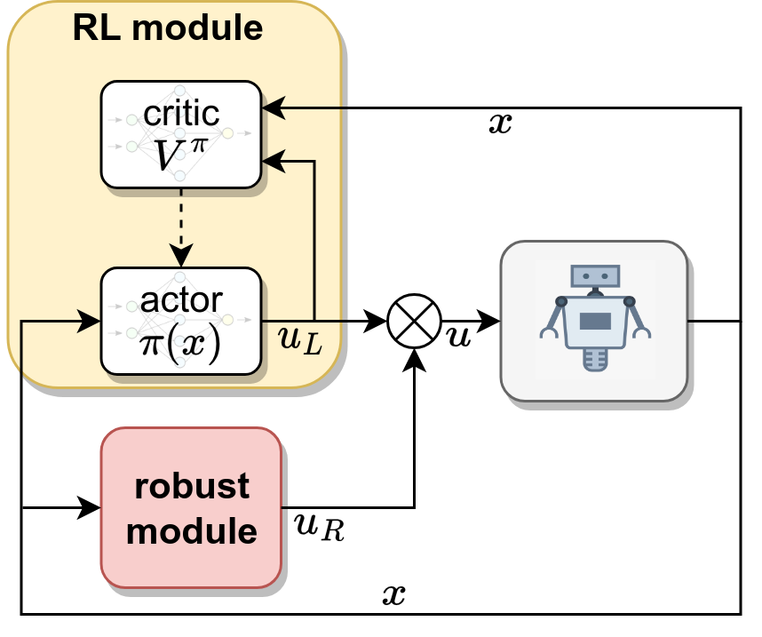
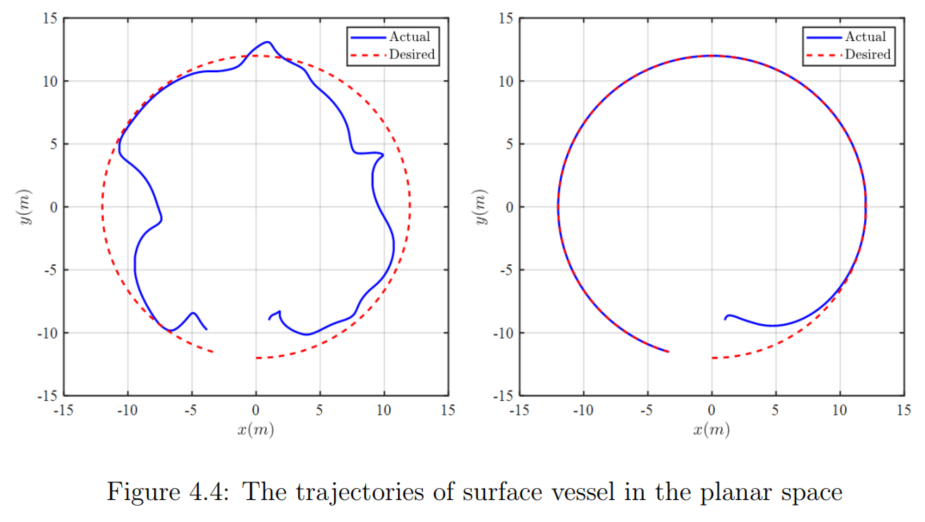
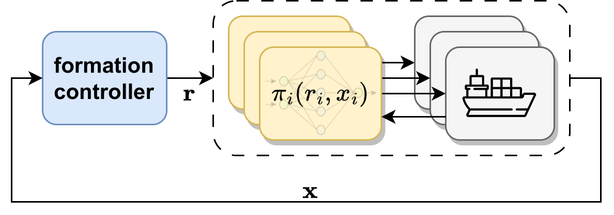

nonlinear systems; adaptive, robust and optimal control; reinforcement learning
This is my previous set of projects in the Advanced Control and Robotics (ACRo) Group at
Hanoi University of Science and Technology, advised by Prof. Phuong Nam Dao. Several papers
and thesis are listed in publications page. Some key points:
Proposed superpositional and hierachical structures to unify nonlinear control and reinforcement learning in robotics.
Explored motion/force robust controller for multiple mobile manipulators to accomplish co-operative tasks.
Integrated control theory to boost stability and robustness of reinforcement learning algorithms (actor-critic) by 66%.
Devised hierarchical formation control for multi-agent systems; scaled up and simulated with MATLAB/Simulink.
Robust Optimal Control for Nonlinear Systems Based on Adaptive Reinforcement Learning
My undergraduate thesis [pdf] explored the
superpositional structures: How could nonlinear control theory improve the
robustness and adaptability of standard RL policies in uncertain environments?

Superpositional structure composes RL with robust/adaptive modules
The first contribution is the introduction of time-varying robust integral of the sign of the error (RISE) into RL-based control of second-order nonlinear systems. Matlab simulation results on a 2-DOF robot arm demonstrate the improved performance of the time-varying RISE-based RL scheme in comparison with the original RISE-based RL controller.
The second contribution is the disturbance observer-based RL control approach which not only learns the optimal policy but also learns the unknown disturbances. To verify the advantages of the proposed control structure, a comparison with the original RL-based method is made, implementing a surface vessel system simulation.

A disturbance observer enables online adaptation, reducing tracking errors by 66% and sample number by 3 times
Formation Control Scheme with Reinforcement Learning Strategy for a Group of Multiple Surface Vehicles
In our journal paper
[html], I proposed a
hierarchical structure for a multi-vessel system, including a centralized
formation controller and a low-level tracking policy for each agent.

The hierachical structure composes high-level formation control with low-level RL policies
Leveraging the Lyapunov theorem, my advisor and I derived the uniformly
ultimate boundedness stability (UUB) of the entire system.